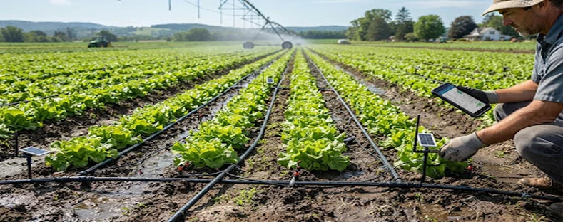
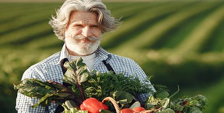
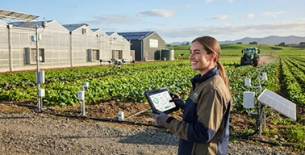
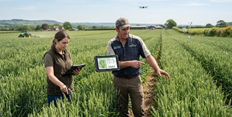
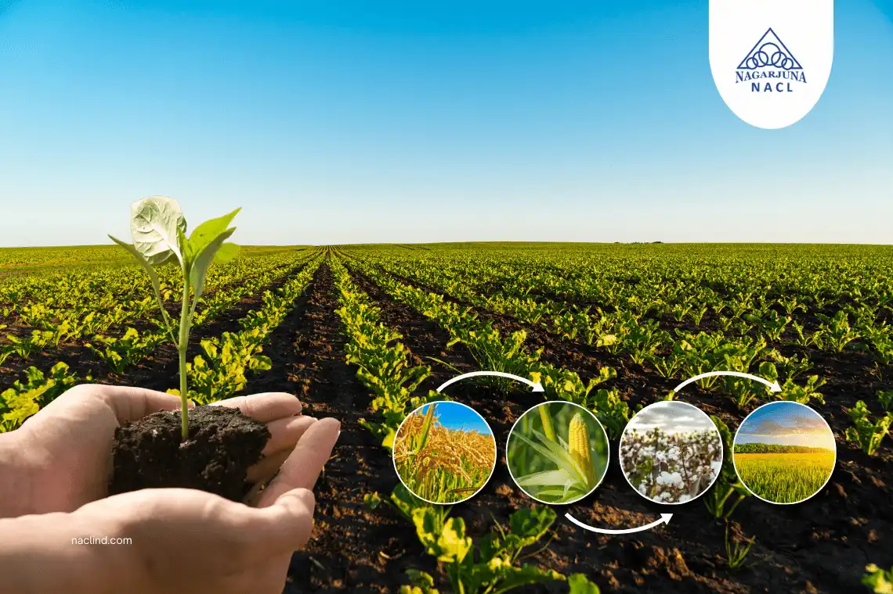
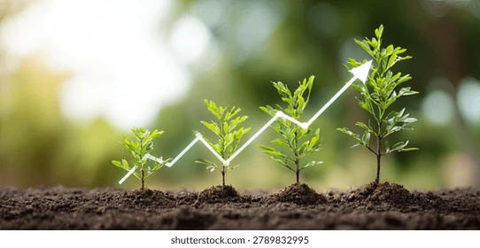

FEATUREDHow Smart Farming Technology is Transforming Agriculture
Discover how modern farmers are using IoT, AI and connected tools to increase productivity, reduce costs, and build a more sustainable future.
Stay updated with the latest trends, expert tips, and real-world stories
from the world of agriculture and agri-tech.

FEATUREDDiscover how modern farmers are using IoT, AI and connected tools to increase productivity, reduce costs, and build a more sustainable future.

From predicting weather trends to optimizing crop yields, data is changing modern agriculture.
Read More →
Learn how smart irrigation systems help farmers conserve water while improving crop production.
Read More →
Explore how drones are helping farmers monitor crops and improve field management.
Read More →Discover sustainable techniques that improve soil health and protect natural resources.
Read More →Learn how soil testing, crop monitoring and precision farming techniques can improve crop quality and productivity.
Read More →
Discover how proper crop rotation can improve soil fertility, reduce crop diseases and pests, and help farmers achieve healthier crops and better yields.
Read More →Explore the latest developments, innovations and opportunities influencing the agricultural industry.
Read More →
Simple and practical tips for better crop planning, resource management, soil care and improved farm productivity throughout the growing season.
Read More →
Showcasing the results of our commitment to quality, innovation,
and sustainable growth.
Our solutions are designed to increase productivity, reduce waste, and ensure sustainable long-term growth. We provide a range of agricultural solutions including crop management.
Yes, we support small-scale farmers with practical, flexible, and sustainable agricultural solutions tailored to their individual needs.
Absolutely. Our methods focus on sustainable farming, responsible resource usage, and environmentally conscious agricultural practices.
Simply get in touch with our team. We will understand your requirements and recommend the right solution for your farm.
Yes, we provide ongoing support and guidance to help you achieve consistent results and long-term growth.